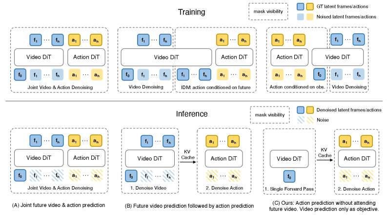
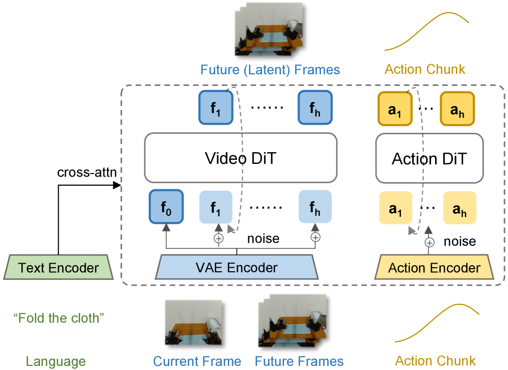
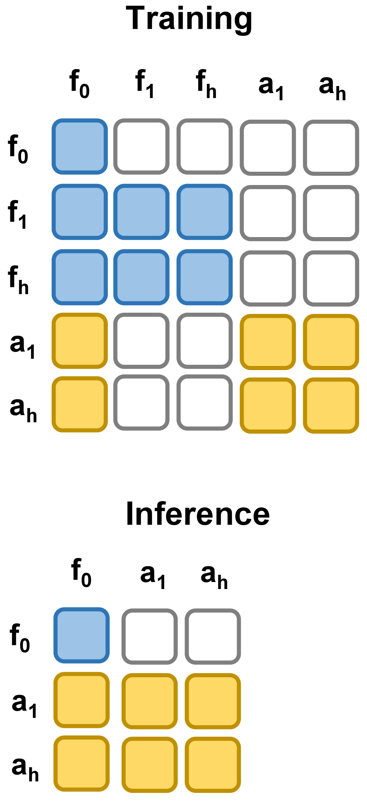
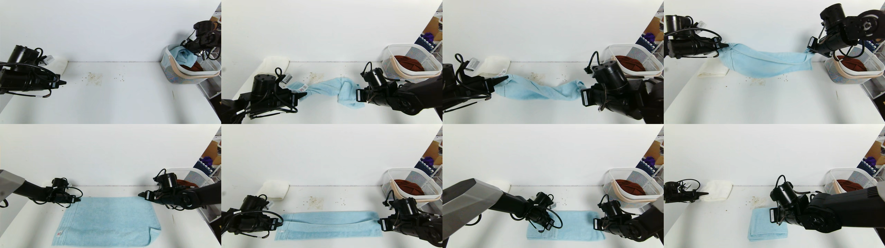
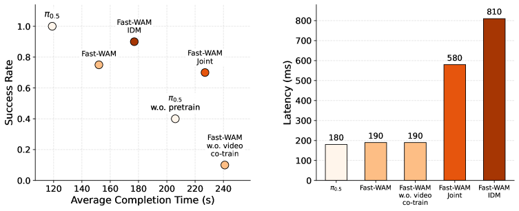

Fast-WAM: Do World Action Models Need Test-time Future Imagination?
1. 论文速览
| 论文要解决什么 | 现有 WAM 常采用 imagine-then-execute：先迭代生成未来视觉，再根据未来视觉预测动作。这带来很高 test-time latency，但到底是“训练时的视频建模”有用，还是“推理时显式未来想象”有用，并不清楚。 |
|---|---|
| 作者的方法抓手 | 构造 Fast-WAM 和三个受控变体：Fast-WAM-Joint、Fast-WAM-IDM、Fast-WAM w.o. video co-train，在统一 backbone/训练配方下解耦 video co-training 与 test-time future generation。 |
| 最重要的结果 | Fast-WAM 在 RoboTwin 2.0 达 91.8%，LIBERO 平均 97.6%，无 embodied pretraining；去掉 video co-training 后分别掉到 83.8% 和 93.5%。真实毛巾折叠任务中，Fast-WAM 延迟 190 ms，而 Fast-WAM-IDM 为 810 ms；no-video-co-train 仅 10% 成功率。 |
| 阅读时要注意的点 | Fast-WAM 不是否定 world model，而是在重新定位 world model 的作用：它也许更像训练阶段的 representation shaping signal，而不是部署时必须显式生成的视频计划。 |
难度评级：★★★★☆。需要理解 WAM/VLA、video diffusion transformer、flow matching、action chunk diffusion、attention mask 防止 future leakage，以及仿真/真实机器人评估。
关键词：World Action Model, video co-training, test-time future imagination, flow matching, Mixture-of-Transformer, Wan2.2-5B, LIBERO, RoboTwin, towel folding。

2. 动机
2.1 WAM 的吸引力与代价
标准 VLA 直接把视觉观测和语言映射到动作，主要继承 web-scale 视觉语言预训练的语义先验。但机器人控制还需要理解物理世界如何在动作下演化。WAM 的吸引力在于把未来视觉预测和动作建模放进同一框架，让策略显式接触 task-relevant temporal structure。
问题是，大多数 WAM 在推理时要迭代 denoise 未来视频，再根据这个 imagined future 生成动作。视频 diffusion 的迭代采样非常贵，真实机器人闭环里每多几百毫秒都可能让策略变慢、变钝。
2.2 论文真正问的问题
核心问题：WAM 的收益来自哪里？是训练时预测未来视频让 backbone 学到了物理/运动表征，还是推理时显式生成未来观察真的给了动作预测必要 foresight？
这个问题过去难回答，因为很多 WAM 把两个因素绑在一起：同一个模型既在训练时学视频预测，也在测试时生成未来视频。Fast-WAM 的贡献是把这两件事拆开，用控制变量实验判断谁更重要。
4. 方法详解
4.1 问题形式化
设当前观测为 $o$，任务语言为 $l$，动作 chunk 为 $a_{1:H}$。标准 visuomotor policy 学：
典型 imagine-then-execute WAM 引入未来视觉 $v_{1:T}$，写成：
直觉：先想象未来，再根据想象生成动作。代价是推理时要采样或 denoise $v_{1:T}$。
Fast-WAM 改成直接策略接口：
其中 $z(o,l)$ 是 video backbone 对当前 context 单次前向得到的 latent world representation。关键差异：$z(o,l)$ 不是推理时生成的未来视频，而是训练时被 video co-training 塑形过的当前表示。
4.2 架构：Wan2.2 video DiT + action expert DiT

模型输入 token 分三组：
- clean first-frame latent tokens：当前观测的干净 latent，是共享视觉锚点。
- noisy future video latent tokens：只在训练时存在，用于 future video flow matching。
- action tokens：由 action expert 处理，用于动作 chunk generation。
所有 token 通过 cross-attention 接收语言 embedding。视频和动作分支之间采用 Mixture-of-Transformer 结构，并用 structured attention mask 控制信息流。
4.3 注意力 mask：既共享 context，又防止 future leakage

训练时，future video tokens 在 video branch 内双向 attention，并可访问 first-frame tokens；action tokens 在 action branch 内双向 attention，也可访问 first-frame tokens。最关键约束是 action tokens 不能 attend to future video tokens。这样视频建模和动作预测都依赖同一个当前视觉 context，但动作不会偷看 ground-truth future。
推理时，future video branch 被整个删除：只保留 first-frame latent tokens，video backbone 单次前向产生 latent world features，再给 action expert 做 action denoising。
4.4 训练目标：action loss + video co-training loss
Fast-WAM 对动作和视频都使用同一个 flow matching 形式。对任意目标变量 $y$，可以是动作 chunk $a_{1:H}$ 或未来视频 latents $z_{1:T}$，采样噪声 $\epsilon\sim\mathcal{N}(0,I)$ 和时间步 $t\in(0,1)$：
训练模型预测从数据到噪声的速度场：
$$\mathcal{L}_{\mathrm{FM}}(y)= \mathbb{E}_{y,\epsilon,t} \left[ \left\|f_\theta(y_t,t,o,l)-(\epsilon-y)\right\|_2^2 \right].$$动作和视频分别为：
$$\mathcal{L}_{\mathrm{act}}=\mathcal{L}_{\mathrm{FM}}(a_{1:H}),\qquad \mathcal{L}_{\mathrm{vid}}=\mathcal{L}_{\mathrm{FM}}(z_{1:T}).$$总损失：
$$\mathcal{L}=\mathcal{L}_{\mathrm{act}}+\lambda\mathcal{L}_{\mathrm{vid}}.$$直觉：$\mathcal{L}_{\mathrm{vid}}$ 不一定为了推理时生成视频，而是作为 world representation regularizer / co-training signal。
4.5 三个受控变体
| 变体 | 训练时 video co-training | 推理时 future imagination | 作用 |
|---|---|---|---|
| Fast-WAM | 有 | 无 | 主方法：保留训练信号，删除推理成本。 |
| Fast-WAM-Joint | 有 | 有，video/action joint denoising | 模拟 joint-modeling WAM，让 video 与 action tokens 互相 attention。 |
| Fast-WAM-IDM | 有 | 有，video-then-action | 先生成未来 video，再用 future representation 预测动作；按 LingBot-VA 做 ground-truth video token noise augmentation，$p=0.5$。 |
| Fast-WAM w.o. video co-train | 无 | 无 | 只去掉 $\mathcal{L}_{\mathrm{vid}}$，控制 video co-training 的贡献。 |
5. 实验
5.1 实现细节
- Backbone：Wan2.2-5B，包括 video DiT、T5 text encoder 和 video VAE。
- Action expert：与 video branch 同构但 hidden dimension 降到 $d_a=1024$；action expert 约 1B，总模型约 6B 参数。
- Action horizon：$h=32$。
- Video chunk：视频帧时间下采样 $4\times$，每个 chunk 9 帧；多相机图像先拼成一张图再送入 VAE。
- Flow matching：训练/推理使用 logit-normal $t$ schedule；推理 action denoising 10 steps，CFG scale 1.0。
- 优化：AdamW，learning rate $1\times10^{-4}$，weight decay 0.01，cosine annealing，mixed precision，gradient clipping 1.0。
- 延迟测量：单张 NVIDIA RTX 5090D V2 32GB。
5.2 Benchmark 设置
| Benchmark | 数据与训练 | 评估 |
|---|---|---|
| LIBERO | 四个 suites：Spatial、Object、Goal、Long；每个 suite 10 tasks、500 demos；训练 20k steps。 | 40 tasks、不同随机种子，总计 2000 trials，报告 success rate。 |
| RoboTwin 2.0 | 50+ 双臂任务；2500 clean demos + 25000 heavy-randomization demos；训练 30k steps。 | 每个任务 100 trials，报告 clean 和 randomized 平均成功率。 |
| Real-world towel folding | Galaxea R1 Lite 平台，60 小时 teleoperated demonstrations；训练 30k steps。 | 报告 success rate 和 average completion time；毛巾折叠考验 deformable object dynamics、长时程规划和闭环操作效率。 |

5.3 RoboTwin 2.0 主结果
| Method | Embodied PT. | Clean | Rand. | Average |
|---|---|---|---|---|
| $\pi_0$ | Yes | 65.92 | 58.40 | 62.2 |
| $\pi_{0.5}$ | Yes | 82.74 | 76.76 | 79.8 |
| Motus | Yes | 88.66 | 87.02 | 87.8 |
| Motus from WAN2.2 | No | 77.56 | 77.00 | 77.3 |
| LingBot-VA | Yes | 92.90 | 91.50 | 92.2 |
| LingBot-VA from WAN2.2 | No | 80.60 | -- | 80.6 |
| Fast-WAM | No | 91.88 | 91.78 | 91.8 |
Fast-WAM 没用 embodied pretraining，却达到 91.8%，明显超过同样无 embodied pretraining 的 Motus from WAN2.2 (77.3) 和 LingBot-VA from WAN2.2 (80.6)，接近带 embodied pretraining 的 LingBot-VA (92.2)。附录 Table 3 给了 RoboTwin 每任务 clean/rand 明细；整体看，Fast-WAM 在许多任务上与最强 baseline 互有胜负，但 no-video-co-train 的平均值显著低 附录 Table 3。
5.4 LIBERO 主结果
| Method | Embodied PT. | Spatial | Object | Goal | Long | Average |
|---|---|---|---|---|---|---|
| OpenVLA | Yes | 84.7 | 88.4 | 79.2 | 53.7 | 76.5 |
| $\pi_0$ | Yes | 96.8 | 98.8 | 95.8 | 85.2 | 94.1 |
| $\pi_{0.5}$ | Yes | 98.8 | 98.2 | 98.0 | 92.4 | 96.9 |
| LingBot-VA | Yes | 98.5 | 99.6 | 97.2 | 98.5 | 98.5 |
| Motus | Yes | 96.8 | 99.8 | 96.6 | 97.6 | 97.7 |
| Fast-WAM | No | 98.2 | 100.0 | 97.0 | 95.2 | 97.6 |
LIBERO 上 Fast-WAM 平均 97.6%，超过 $\pi_{0.5}$ 的 96.9，并接近 Motus/LingBot-VA。它没有 embodied pretraining，这是作者强调的数据效率点。
5.5 控制变量：未来想象 vs video co-training
| Variant | RoboTwin Avg. | LIBERO Avg. | 解释 |
|---|---|---|---|
| Fast-WAM | 91.8 | 97.6 | 训练有 video co-training，推理无 future imagination。 |
| Fast-WAM-Joint | 90.6 | 98.5 | joint denoise future video/action，显式推理想象。 |
| Fast-WAM-IDM | 91.3 | 98.0 | 先生成 future video，再 action prediction。 |
| Fast-WAM w.o. video co-train | 83.8 | 93.5 | 推理同 Fast-WAM，但训练去掉 video modeling objective。 |
这是论文的关键证据：Fast-WAM 与两个 imagine-then-execute 变体的差距很小；但去掉 video co-training 后掉得更明显。RoboTwin 从 91.8 掉到 83.8，LIBERO 从 97.6 掉到 93.5，并且 LIBERO Spatial/Long 掉得尤其明显。作者据此认为，WAM 的主要价值更可能来自训练时的视频预测目标，而不是推理时真的生成未来视频。
5.6 真实毛巾折叠：性能与延迟

真实任务中，预训练 $\pi_{0.5}$ 仍是最强方法，成功率最高且 completion time 最短。Fast-WAM family 之间性能相近：Fast-WAM-IDM 成功率最高，Fast-WAM completion time 更好。更重要的是，所有带 video co-training 的 Fast-WAM 变体都明显强于无 pretraining 的 $\pi_{0.5}$，而 no-video-co-train 崩到 10% success。这再次支持 video co-training 是主因。
延迟上，Fast-WAM 190 ms，与 no-video-co-train 的 190 ms 相同量级；Fast-WAM-Joint 580 ms，Fast-WAM-IDM 810 ms。Fast-WAM 因此成为一个更好的部署折中点：保留大部分 WAM 性能，但避免显式未来视频采样开销。
6. 可复现审计
6.1 复现所需组件
| 组件 | 论文信息 | 复现注意 |
|---|---|---|
| Backbone | Wan2.2-5B video DiT + T5 text encoder + video VAE。 | 需要可加载 Wan2.2-5B；显存/参数规模较高。 |
| Action expert | DiT，同构于 video branch，hidden dim 1024，约 1B。 | 动作 token、时间步 embedding、cross-attention 与 video branch 对齐要谨慎。 |
| 训练目标 | $\mathcal{L}_{act}+\lambda\mathcal{L}_{vid}$。 | 论文未在正文明确给出 $\lambda$ 数值，复现实验需从代码或默认配置确认。 |
| 数据 | LIBERO、RoboTwin 2.0、真实 Galaxea R1 Lite 毛巾折叠 60 小时数据。 | 仿真可复现性高；真实数据和硬件更难完全复现。 |
| 延迟测量 | 单张 NVIDIA RTX 5090D V2 32GB。 | 跨 GPU 延迟不可直接比较；要报告 action denoising steps 和 batch 设置。 |
6.2 最小复现路线
- 先在 LIBERO 上实现 Fast-WAM w.o. video co-train：只用当前 first-frame latent + language + action DiT，跑通 action flow matching。
- 加入 future video latent branch 和 $\mathcal{L}_{vid}$，但保持 action tokens 不能看 future video tokens，验证 Fast-WAM 是否提升。
- 实现 Fast-WAM-Joint：放开 action/video tokens 的相互 attention，测试是否接近 Fast-WAM。
- 实现 Fast-WAM-IDM：先生成 future video representation，再 condition action；注意使用 $p=0.5$ ground-truth video token noise augmentation。
- 复现 LIBERO 表格，再迁移到 RoboTwin 多任务训练；最后才考虑真实毛巾折叠。
- 延迟评估必须单独做：Fast-WAM 无 future branch，但仍有 action denoising 10 steps；IDM/Joint 的额外开销来自未来视频生成/联合采样。
6.3 复现风险点
| 风险 | 为什么重要 | 建议 |
|---|---|---|
| $\lambda$ 未在正文给出 | video co-training 强弱直接影响结论。 | 优先查官方代码配置；如果没有，做 $\lambda$ sweep。 |
| mask 实现容易泄漏 future | 若 action tokens 能看 ground-truth future video，结果会虚高。 | 写单元测试检查 attention mask 可达性。 |
| 多相机拼图输入细节 | 多 camera concat 到单图后进 VAE，影响 token layout。 | 保持相机顺序、分辨率、crop/resize 一致。 |
| 真实毛巾数据不可公开验证 | 60 小时 teleoperation 和硬件平台影响很大。 | 把真实结果视为部署证据，结构性结论主要看仿真控制变量。 |
| 预训练公平性 | 不同 baseline 使用 embodied pretraining 与否混在同表。 | 阅读时分组比较：同为 no embodied PT 的方法最公平。 |
7. 分析、局限与边界
7.1 这篇论文最有价值的地方
最有价值的是问题拆解本身。很多 WAM 论文默认“生成未来视频”是必要步骤，但 Fast-WAM 把它拆成训练目标和推理机制两个因素，并用同一框架里的变体验证。这个实验设计比单纯提出一个新模型更有启发性：它告诉我们 world model 的价值可能主要体现在训练表征，而不是部署时显式想象。
第二个价值点是部署导向。190 ms vs 580/810 ms 的差距对真实机器人很现实。Fast-WAM 让 WAM 接近 VLA 的推理接口，同时保留 WAM 训练信号，这是一个很实用的折中。
7.2 结果为什么站得住
- 控制变量清楚：Fast-WAM、Joint、IDM、no-co-train 的 backbone 和训练 recipe 尽量对齐。
- 跨 benchmark 一致：RoboTwin、LIBERO、真实毛巾折叠都显示 video co-training drop 大于 future imagination variant gap。
- 效率指标明确：真实任务不仅报告 success，也报告 completion time 和 latency。
- 附录细粒度支持：RoboTwin per-task table 显示提升不是只来自少数任务，no-co-train 的平均下降在 clean/rand 都明显。
7.3 局限与需要追问的点
| 问题 | 影响 |
|---|---|
| 结论是“future imagination 不那么关键”，不是“完全没用” | LIBERO 上 Joint/IDM 仍略高于 Fast-WAM；真实任务 Fast-WAM-IDM 成功率最高。只是它们的增益是否值得延迟成本，要看部署场景。 |
| 只研究 single action chunk | 作者为控制变量省略 outer autoregressive rollout；更长任务中显式未来想象是否更有用仍需验证。 |
| 真实任务只有毛巾折叠 | deformable object 很有挑战，但单一真实任务不足以覆盖全部机器人操作。 |
| 模型规模很大 | 6B 模型 + Wan2.2-5B backbone，复现和部署门槛高。 |
| 训练细节仍依赖代码 | 正文给了大部分优化参数，但 $\lambda$ 等关键配置需要查官方代码。 |
7.4 组会可追问的问题
- 如果任务需要显式中间子目标，例如复杂装配或导航，test-time future imagination 是否会重新变得重要？
- Fast-WAM 的 video co-training 学到的 representation 到底编码了什么？能否用 probing/attention/feature prediction 证明它捕捉物理动态？
- Action tokens 不能看 future video tokens，但 video branch 和 action branch 共享 first-frame anchor；这种 mask 是否是最优，还是有更细的 causal mask？
- Wan2.2 是通用视频生成 backbone。换成机器人视频预训练 backbone 后，Fast-WAM 与 Joint/IDM 的差距会变大还是变小？
- Fast-WAM 在真实任务中 completion time 优于 IDM，但 success rate 不一定最高。实际系统该如何在延迟、成功率和动作稳定性之间选点？
附：本报告覆盖检查
已覆盖：Abstract、Introduction、Related Work、Method、Experiment、Conclusion，以及 Appendix 的 RoboTwin per-task 结果。
图表处理：使用 arXiv HTML 渲染出的 PNG 图像与源码图片，保存在 figures/；关键表格已重建为 HTML。
残余风险：真实毛巾折叠训练数据不是公开 benchmark；完整复现仍依赖官方代码配置，尤其是 $\lambda$ 和具体数据处理。